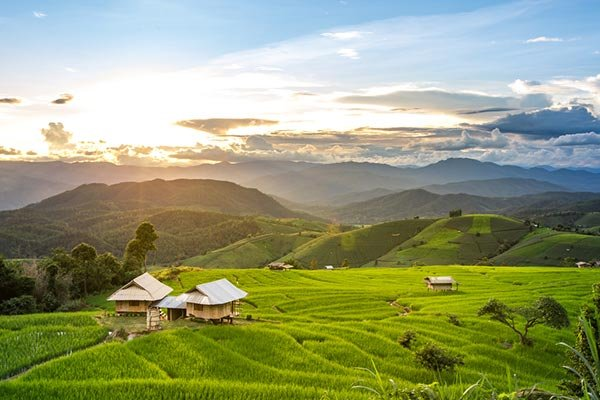

เริ่มต้นกันที่ "แม่แจ่ม" อำเภอเล็ก ๆ ในจังหวัดเชียงใหม่ ดินแดนนครลับแลแห่งเมืองล้านนา โดดเดี่ยวท่ามกลางป่า ถูกโอบล้อมไปด้วยภูเขา อยู่ในอ้อมกอดของแม่น้ำอย่างอบอุ่น รอยยิ้มผู้คนเป็นมิตร สนิทกันเหมือนญาติ นี่คือเอกลักษณ์และคำนิยามความเป็นแม่แจ่มได้อย่างชัดเจน เพราะที่นี่ยังคงเงียบสงบ มีหมู่บ้านอยู่ตามที่ราบและกระจัดกระจายอยู่ตามหุบเขาใหญ่น้อยที่ล้อมรอบเรียงรายอยู่ ชาวบ้านมีวิถีชีวิตที่เรียบง่าย อีกทั้งยังมีสถาปัตยกรรมที่งดงามมากมาย แต่สิ่งหนึ่งที่เป็นเสมือนไฮไลท์ของที่นี่ก็คือนาข้าวขั้นบันไดกว้างไกลสุดสายตา อีกทั้งยังมีสถานที่ท่องเที่ยว เช่น วัดป่าแดด, วัดกองกาน, วัดกองแขก, สถานีทดลองเกษตรที่สูงแม่จอนหลวง, สวนป่าแม่แจ่ม และหมู่บ้านทอผ้าซิ่นตีนจก ฯลฯ